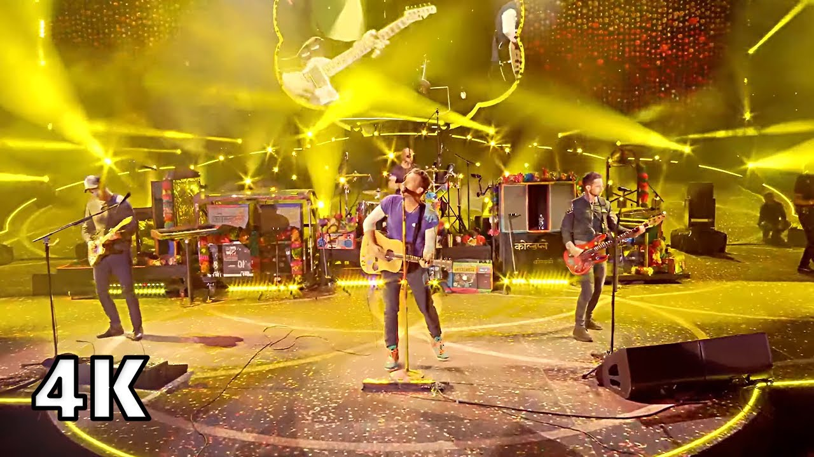

!La Banda en diferentes partes del mundo!
Glastonbury - Inglaterra
Buenos aires - Argentina

São Paulo - Brasil

Texas - EE.UU
La experiencia de presenciar un concierto de Coldplay trasciende lo estrictamente musical para convertirse en un espectáculo inmersivo de diseño técnico y energía colectiva. Desde el primer acorde, la banda británica transforma estadios multitudinarios en espacios de comunión masiva donde la precisión acústica se combina con una puesta en escena meticulosamente orquestada. El uso de tecnología como las pulseras LED sincronizadas (Xylobands) no es un mero adorno visual, sino un recurso estructural que convierte al propio público en la pantalla principal del evento, integrando a decenas de miles de asistentes como parte del diseño lumínico. A nivel de producción y repertorio, las giras del grupo —como Music of the Spheres World Tour— destacan por su capacidad de equilibrar la grandiosidad conceptual con la inmediatez emocional. Transicionan sin costuras de himnos de estadio cargados de sintetizadores y capas de sonido masivas a momentos acústicos de minimalismo absoluto al centro del escenario. Más allá del valor técnico, el compromiso de la agrupación con la sostenibilidad ambiental y la reducción del impacto de carbono en sus montajes sienta un precedente operativo riguroso para la industria del entretenimiento a gran escala.
A nivel de producción y repertorio, las giras del grupo —como Music of the Spheres World Tour— destacan por su capacidad de equilibrar la grandiosidad conceptual con la inmediatez emocional. Transicionan sin costuras de himnos de estadio cargados de sintetizadores y capas de sonido masivas a momentos acústicos de minimalismo absoluto al centro del escenario. Más allá del valor técnico, el compromiso de la agrupación con la sostenibilidad ambiental y la reducción del impacto de carbono en sus montajes sienta un precedente operativo riguroso para la industria del entretenimiento a gran escala.
El fenómeno de Coldplay en directo radica en cómo estructuran la tensión dramática a lo largo del show. No se limitan a repasar un catálogo de éxitos; diseñan una narrativa visual y sonora donde el ritmo del concierto pasa de la explosión métrica de temas como Viva La Vida a la contención íntima de Fix You. Esta arquitectura del espectáculo garantiza que la atención de la audiencia no decayga en ningún momento, utilizando cañones de confeti biodegradable, llamaradas controladas y proyecciones láser que acentúan los clímax armónicos de cada canción.
Asimismo, la labor del frontman Chris Martin actúa como el eje orgánico que evita que la gigantesca maquinaria tecnológica se sienta fría o impersonal. Su interacción constante con el público, improvisando fragmentos en el idioma local o subiendo a asistentes al escenario para interpretar piezas al piano, quiebra la barrera entre el artista y el espectador. Esa dualidad entre una superproducción de nivel industrial y la vulnerabilidad de una sesión acústica es precisamente lo que define el estándar de sus presentaciones en vivo.